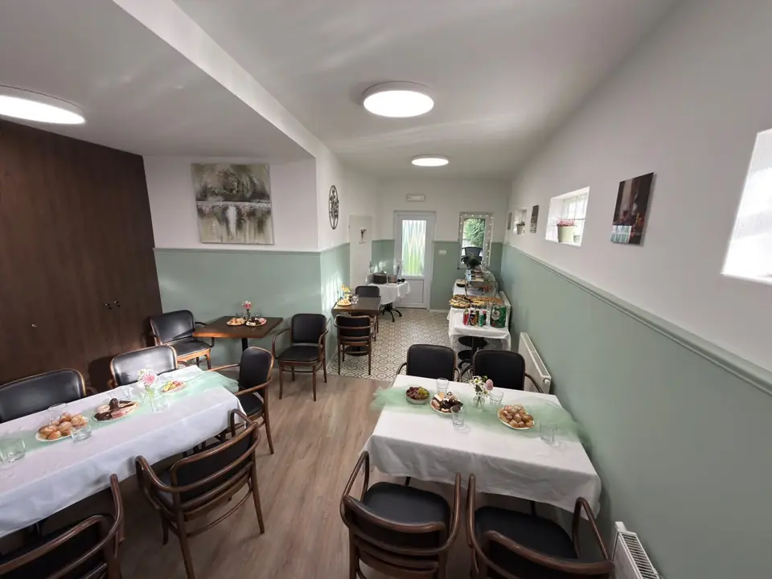
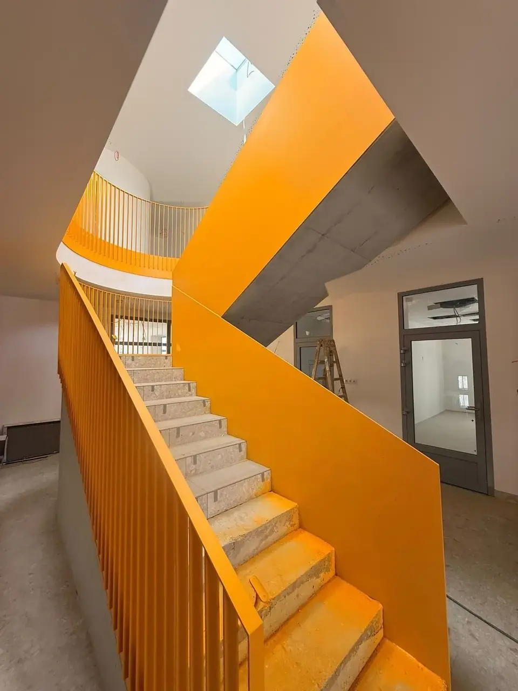
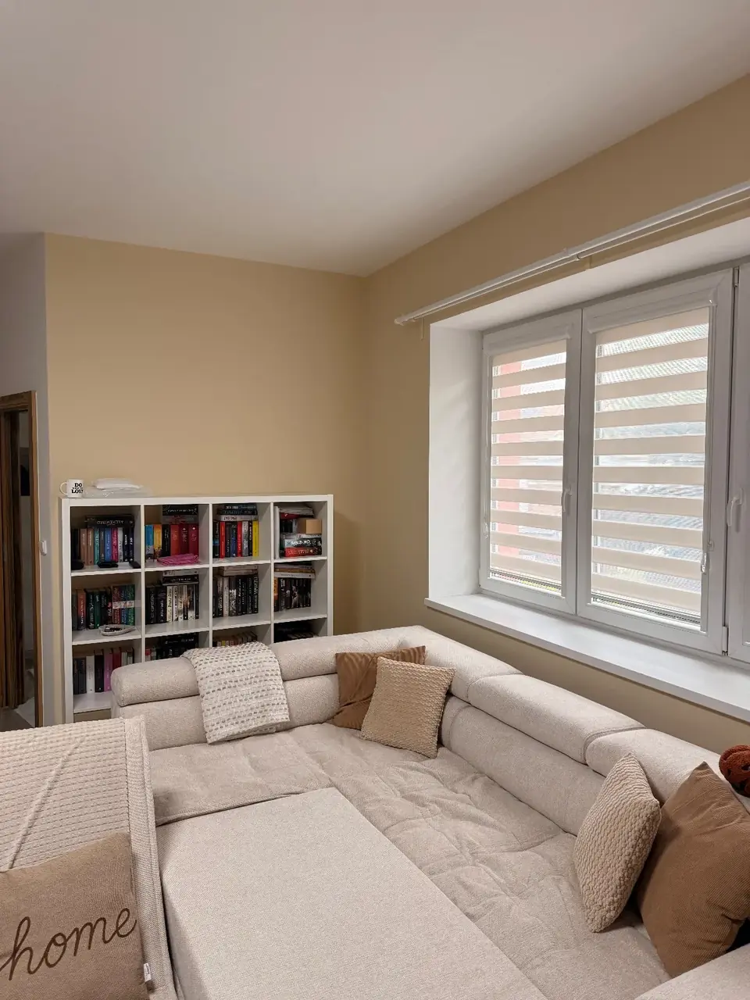
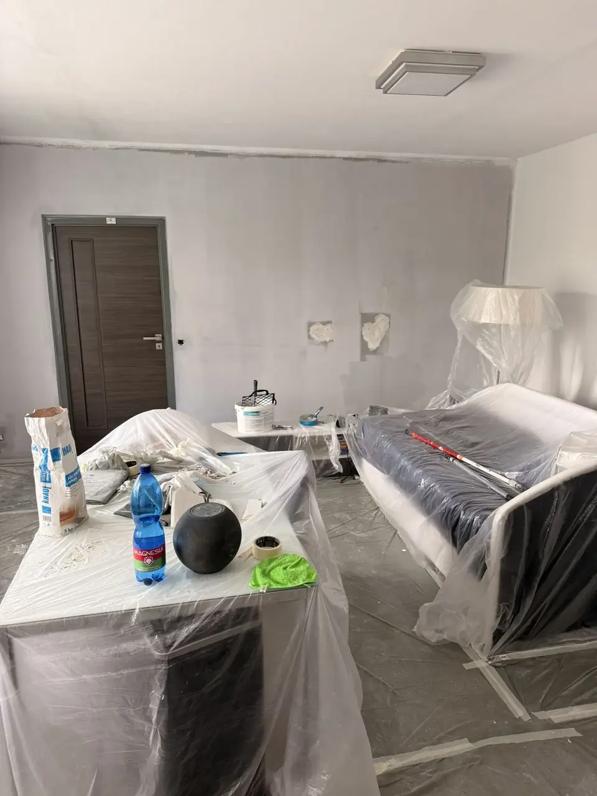

Zlín · Ortodoncie
Zlín · Ortodoncie
Střelice
Opatovice Brno · Špitálka
Brno · ŠpitálkaMalíři a dekorativní stěrky v Brně
Malujeme byty a domy, děláme betonové stěrky, benátský štuk, tapety a mikrocement. Nábytek zakryjeme a po práci uklidíme.
- 5,0 z 29 recenzí na Googlu
- Ozveme se do 24 hodin
Co pro vás uděláme
Každá služba má svou stránku s cenou, fotkami ze zakázek a recenzemi k ní.
Malování bytů a pokojů
Zakryjeme, opravíme, vymalujeme a uklidíme. Byt nemusíte vyklízet.

Betonová stěrka
Stěna, která vypadá jako beton. Na stěnu, krb i do koupelny.
Benátský štuk a dekorativní stěrky
Ručně hlazené stěny s hloubkou. Marmorino, štuk, zlaté efekty.

Tapetování
Vzor napojený i kolem dveří. Tapetu můžete mít už koupenou.
Mikrocement přes obklad
Nová koupelna bez bourání, když je obklad pevný.

Dekorativní malování stěn
Dvoubarevné stěny s rovnou hranou a ručně malované nápisy.
Dále děláme nátěry fasád, čištění fasád, nátěry dřeva a kovu, sanace po zatékání, odstranění graffiti, epoxidové podlahy, průmyslové nátěry, písmomalířství, nátěry střech, speciální nátěry.
Stejná stěna před a po
Fotky z našich zakázek, žádné z fotobanky. Na webu je 43 realizací a 348 fotek.
 PoPřed
PoPřed

 PředPo
PředPo
Jak s námi zakázka probíhá
- Pošlete fotkyPár fotek a přibližné rozměry stačí. Do 24 hodin se ozveme s cenou nebo s dotazem.
- Potvrdíme cenu a termínU větší zakázky se přijedeme podívat. Termín, který domluvíme, dodržíme.
- Zakryjeme a udělámeNábytek a podlahy zakryjeme, opravíme podklad a pustíme se do práce.
- Uklidíme a předámeHotovou práci spolu projdeme. Fólie a páska odjedou s námi.

Po nás neuklízíte
„Perfektní rychlost domluvy i samotné realizace výmalby. Byt předán v čistém stavu, vše krásně zapravené, děkujeme.“
Libor Z., Google
Co píšou zákazníci
„Moc rádi doporučujeme Honzu a Davida! Dělali nám doma výmalbu a stěrku a s výsledkem jsme opravdu moc spokojení. Oba jsou šikovní, pečliví a je vidět, že své práci rozumí. Co jsme ale ocenili snad úplně nejvíc – na čem jsme se domluvili, to vždy platilo. …“
★★★★★ Jiři K., recenze na Googlu
Recenze přebíráme doslova, jen bez emoji. Všechny jsou na profilu firmy na Googlu.
S realizací betonové stěrky na našem krbu jsme maximálně spokojeni. Práce byla odvedena naprosto precizně, detaily a rohy jsou dotažené k dokonalosti. Krb teď vypadá luxusně a stal se dominantou celého obývacího pokoje. Firmu Tři Mistři i pana řemeslníka Honzu mohu pro jeho profesionalitu a smysl pro detail všem vřele doporučit!
Musím chlapy pochválit, malovali nám celý dům a na část dělali stěrku, odvedli kvalitně a velmi zodpovědně práci. Super rychlost, pečlivost a samozřejmě si po sobě uklidili.
Rád bych touto cestou poděkoval za dlouhodobě skvělé služby. Tuto firmu jsem na malování využil již několikrát a vždy jsem byl nadmíru spokojen. Kombinace profesionálního přístupu, stoprocentní kvality a velmi příznivé ceny je v dnešní době vzácná.
Velice spolehlivý a šikovní kluci, kteří odvádí skvělou práci. Jednoznačně doporučuji. Umí skvěle i tapety.
Profesně i lidsky skvěle odvedená práce. Všechno perfektní. Předáno čisté a poklizené. Děkuji!
Kde pracujete?
V celém Brně a okolí do zhruba 20 km, například v Modřicích, Šlapanicích, Kuřimi, Rosicích nebo Slavkově u Brna.
Kolik stojí malování nebo stěrka?
Cenu počítáme podle plochy, stavu podkladu a techniky. Pošlete fotky a přibližné rozměry a do 24 hodin se ozveme s nezávaznou cenou.
Musím před malováním vyklidit byt?
Ne. Nábytek a podlahy zakryjeme a po práci uklidíme.
Přijdou pokaždé stejní lidé?
Ano. Kdo si s vámi zakázku domluví, ten ji i udělá.
Kdy můžete začít?
[doplnit: obvyklá čekací doba na termín]
Pošlete fotky, cenu máte do 24 hodin
Nacenění je zdarma a nezávazné. Pracujeme v Brně a okolí do 20 km.
+420 774 927 182- Střed
- Žabovřesky
- Královo Pole
- Líšeň
- Bystrc
- Bohunice
- Židenice
- Komín
- Starý Lískovec
- Modřice
- Šlapanice
- Kuřim
- Rosice
- Slavkov u Brna